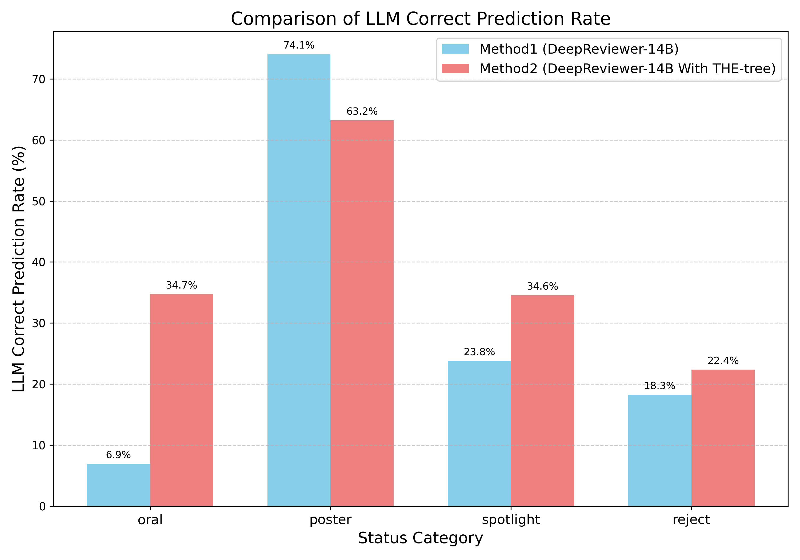
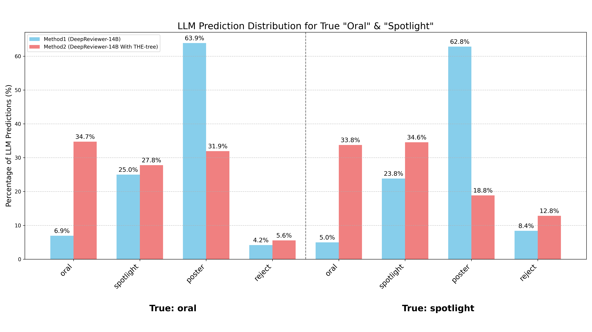
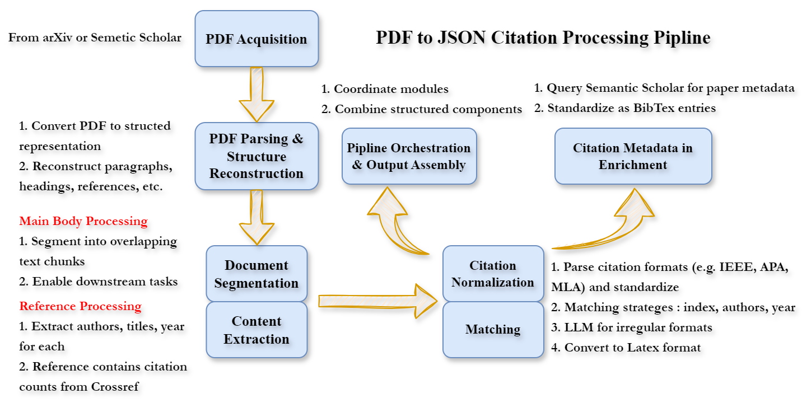
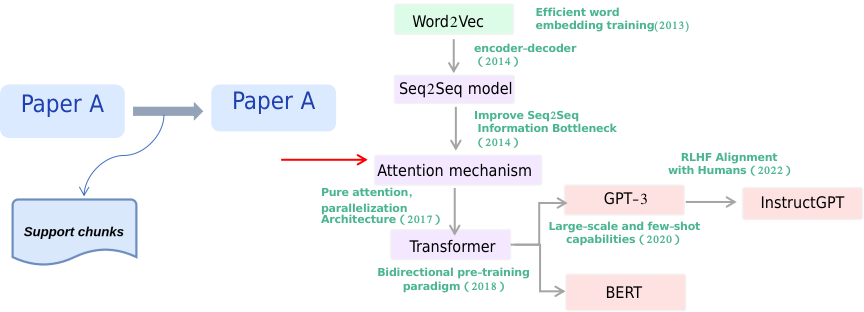

Large Language Models (LLMs) are accelerating scientific idea generation, but rigorously evaluating these numerous, often superficial, AI-generated propositions for novelty and factual accuracy is a critical bottleneck; manual verification is too slow. Existing validation methods are inadequate: LLMs as standalone verifiers may hallucinate and lack domain knowledge (our findings show ~60% unawareness of relevant papers in specific domains), while traditional citation networks lack explicit causality and narrative surveys are unstructured. This underscores a core challenge: the absence of structured, verifiable, and causally-linked historical data of scientific evolution. To address this, we introduce THE-Tree (Technology History Evolution Tree), a computational framework that constructs such domain-specific evolution trees from scientific literature. THE-Tree employs a search algorithm to explore evolutionary paths. During its node expansion, it utilizes a novel "Think-Verbalize-Cite-Verify" process: an LLM proposes potential advancements and cites supporting literature. Critically, each proposed evolutionary link is then validated for logical coherence and evidential support by a recovered natural language inference mechanism that interrogates the cited literature, ensuring that each step is grounded. We construct and validate 88 THE-Trees across diverse domains and release a benchmark dataset including up to 71k fact verifications covering 27k papers to foster further research. Experiments demonstrate that i) in graph completion, our THE-Tree improves hit@1 by 8% to 14% across multiple models compared to traditional citation networks; ii) for predicting future scientific developments, it improves hit@1 metric by nearly 10%; and iii) when combined with other methods, it boosts the performance of evaluating important scientific papers by almost 100%. By constructing explicit, verifiable pathways of scientific progression, THE-Tree provides a robust historical foundation for evaluating new hypotheses (human or AI-generated) and enables a computable science history, fostering evidence-based AI-driven scientific discovery.
Automating scientific discovery has been a long-standing goal. While Large Language Models (LLMs) offer new avenues for hypothesis generation, a critical bottleneck remains: the effective evaluation and validation of scientific ideas. Current validation approaches face several critical challenges, including the time-consuming nature of manual verification and the limitations of automated validation using LLMs, such as hallucination and bias.
To address this, we propose leveraging the authentic patterns and causal evolutionary pathways from scientific history for more reliable assessment. We introduce THE-Tree (Technology History Evolution Tree), a computational framework to construct structured, verifiable, domain-specific technology evolution trees from scientific literature. THE-Tree builds a topic's evolution by representing individual papers as nodes and the inferential relationships between them as edges, providing a solid factual basis and clear historical context for evaluating new hypotheses.
Our main contributions are:
We introduce the THE-Tree (Technology History Evolution Tree) as a structured representation of scientific evolution. In a THE-Tree, each scientific paper is a node with rich metadata, and edges represent historical, inferential, and evolutionary relationships. Unlike traditional citation networks, edges in THE-Tree have deep semantic meaning, signifying causal contributions and logical foundations.
Once constructed, a THE-Tree serves as a powerful instrument for verifying and contextualizing new scientific ideas. The process involves identifying the relevant topic space for a new paper, originating candidate paths in the corresponding THE-Tree, and performing historical path retrospection to situate the new research within established knowledge frameworks.
The manual construction of comprehensive and accurate THE-Trees for diverse scientific domains would be a prohibitively laborious task. Therefore, we develop a computational framework for the automated construction of THE-Trees from scientific literature. Our approach formulates this construction as an optimization problem to find paths in scientific literature that maximize a composite reward, reflecting node importance and path coherence:
\[ \max_{\text{Path}} \left( \sum_{v \in \text{Path}} S(v) + R_{\text{gen}} + R_{\text{attr}} \right) \]
Here, \(S(v)\) is the importance score of a paper, \(R_{\text{gen}}\) reflects path coherence, and \(R_{\text{attr}}\) validates the link between nodes. This objective is pursued using a Self-Guided Temporal Monte Carlo Tree Search (SGT-MCTS) algorithm. The selection of nodes during this search is guided by a SGT-UCT formula that incorporates LLM guidance and temporal coherence:
\[ \text{SGT-UCT}(v) = \left(\frac{Q(v)}{N(v)} + c \cdot \sqrt{\frac{\ln N(p)}{N(v)}} + \lambda \cdot \text{LLM}_{\text{priority}}(v)\right)\cdot \text{TempCoherence}(v | P_{prev}) \]
This formula balances exploitation (\(Q(v)/N(v)\)), exploration (\(c \cdot \sqrt{\ln N(p)/N(v)}\)), and LLM-guided priority, modulated by temporal coherence to ensure chronological consistency.
The construction pipeline consists of several key stages:
We conducted a series of experiments to validate the capabilities of THE-Tree in enhancing scientific evaluation, reconstructing technological trajectories, and predicting future scientific developments. For detailed information on dataset construction and evaluation metrics, please refer to the supplementary materials at the end of this page.
We investigated whether THE-Tree can enhance the verification capabilities of Large Language Models (LLMs) for evaluating scientific papers. The experiment focused on assessing NeurIPS 2024 submissions, leveraging THE-Tree to provide factual grounding and historical context to various LLMs.
| Model | NeurIPS 2024 | ||||||
|---|---|---|---|---|---|---|---|
| Accuracy of accept and reject | Accuracy of Status | ||||||
| Acc% | Rej% | Total% | Poster% | Spot% | Oral% | Total% | |
| Without THE-tree Augmentation | |||||||
| Qwen2.5-72b-instruct | 99.63 | 0 | 25.70 | 1.24 | 100 | 0 | 2.42 |
| Deep-Reviewer-14b | 92.61 | 18.28 | 37.45 | 74.03 | 22.77 | 6.94 | 31.03 |
| Deep-Reviewer-7b | 86.79 | 19.78 | 37.07 | 60.42 | 19.05 | 0 | 28.9 |
| GPT-4o | 99.63 | 2.24 | 26.02 | 29.46 | 86.96 | 0 | 10.26 |
| Claude-3.5-Sonnet | 99.75 | 0.38 | 27.28 | 10.90 | 77.96 | 18.57 | 4.59 |
| Deepseek-R1 | 100.0 | 2.00 | 26.03 | 54.13 | 53.31 | 0 | 15.00 |
| With THE-tree Augmentation | |||||||
| Qwen2.5-72b-instruct | 99.84 | 0.37 | 26.03 | 1.76 | 97.38 | 0 | 2.76 |
| Deep-Reviewer-14b | 89.93 | 22.39 | 39.82 | 63.2 | 34.55 | 34.72 | 32.08 |
| Deep-Reviewer-7b | 76.12 | 63.69 | 66.90 | 57 | 24.99 | 2.33 | 60.84 |
| GPT-4o | 99.66 | 2.66 | 27.69 | 34.45 | 72 | 2.6 | 11.41 |
| Claude-3.5-Sonnet | 71.46 | 36.57 | 45.57 | 28.72 | 38.13 | 36.57 | 34.81 |
| Deepseek-R1 | 99.57 | 3.42 | 28.23 | 56.49 | 56.66 | 2.6 | 16.68 |
The results indicate that by providing scientific evolutionary context, THE-Tree significantly enhances the LLM's capability to determine paper acceptance. The data highlighted in red shows the performance after using THE-Tree, demonstrating a notable improvement in the model's ability to reject low-quality submissions and identify high-impact papers (Orals, Spotlights), in some cases nearly doubling the accuracy.
To better illustrate the impact, we analyzed the performance of the DeepReviewer-14b model. The figure below shows the recall of correctly predicted important papers over time. Methods enhanced with THE-Tree consistently identify more important papers compared to baselines.
Furthermore, with THE-Tree, its predictions for high-impact papers (Oral or Spotlight) shift more decisively towards the correct, higher-quality categories. In a specific analysis of the paper "Neural Pfaffians" (ground truth: Oral), the LLM without THE-Tree rated it as "poster", whereas the augmented LLM correctly predicted its status as "oral", demonstrating a more nuanced understanding of the paper's novelty and impact.
Prediction distribution for high-impact papers shifts with THE-Tree.
We validated the quality of the constructed THE-Trees from two perspectives: the effectiveness of the underlying validation mechanism (RA-NLI) and the quality of the reconstructed trees compared to an expert-refined ground truth.
Our Retrieval-Augmented Natural Language Inference (RA-NLI) system is crucial for validating the evolutionary links within a THE-Tree. We compared its accuracy and fact-consistency against several SOTA models. The validation process can be formalized as follows, where for a given pair of technology nodes \(v_i\) and \(v_j\), we compute the attribution relationship:
\[ R_{\text{attr}}(v_i \to v_j) = \alpha \cdot \text{NLI}(s_i, s_j) + (1-\alpha) \cdot \text{LLM}_{\text{eval}}(s_i, s_j, C) \]
Here, \(s_i\) and \(s_j\) are textual descriptions, \(C\) is retrieved context, and \(\alpha\) is a weighting parameter (0.7). As shown below, our RA-NLI method demonstrates a significantly lower fact-missing rate and the highest overall accuracy.
| Method | Fact Missing Rate (%) | Accuracy (%) |
|---|---|---|
| Claude 3.5 Sonnet | 47.93 | 60.22 |
| GPT-4o | 58.19 | 60.18 |
| DeepSeek R1 | 48.16 | 76.40 |
| Qwen 2.5-72B | 58.29 | 53.95 |
| DeepReviewer-7B | 40.88 | 93.95 |
| DeepReviewer-14B | 68.84 | 76.41 |
| LLaMA 3.1 | 42.29 | 60.40 |
| Factual Supplement | ||
| Claude 3.5 Sonnet w/ Fact | - | 65.34 |
| GPT-4o w/ Fact | - | 69.40 |
| DeepSeek R1 w/ Fact | - | 81.60 |
| Qwen 2.5-72B w/ Fact | - | 66.80 |
| DeepReviewer-7B w/ Fact | - | 95.38 |
| DeepReviewer-14B w/ Fact | - | 82.09 |
| LLaMA 3.1 w/ Fact | - | 65.35 |
| RA-NLI (Ours) | 4.75 | 95.60 |
We compared MCTS-generated THE-Trees against an expert-refined ground truth. The results show that our method achieves strong performance in recalling entities and relations validated by experts, with reasonable precision and F1-scores.
| Method | Entity | Relation | |||||
|---|---|---|---|---|---|---|---|
| Recall | Precision | F1 | Avg_Time_Diff | Recall | Precision | F1 | |
| Expert | 1.00 | 1.00 | 1.00 | 2.93 | 1.00 | 1.00 | 1.00 |
| THE-Tree | 0.84 | 0.67 | 0.75 | 3.08 | 0.78 | 0.64 | 0.70 |
We evaluated THE-Tree's ability to represent scientific knowledge structures via a graph completion task. This involved predicting missing evolutionary entities from a given year, using prior years' data as history. THE-Tree robustly outperformed traditional citation graphs, showcasing its superior efficacy in modeling latent knowledge structures.
| Model | Hit@1 (↑) | Hit@3 (↑) | Hit@5 (↑) | MR (↓) | MRR (↑) |
|---|---|---|---|---|---|
| Graph built with Traditional Citations Relation | |||||
| Qwen2.5-72b | 0.585 | 0.848 | 0.911 | 1.806 | 0.763 |
| Qwen2.5-32b | 0.299 | 0.631 | 0.796 | 3.127 | 0.528 |
| Qwen2.5-7b | 0.253 | 0.679 | 0.810 | 3.078 | 0.511 |
| Gemma-7b | 0.163 | 0.627 | 0.786 | 3.497 | 0.436 |
| Graph built with Our Reasoning Relation | |||||
| Qwen2.5-72b | 0.721 | 0.906 | 0.931 | 1.427 | 0.859 |
| Qwen2.5-32b | 0.371 | 0.739 | 0.856 | 2.577 | 0.605 |
| Qwen2.5-7b | 0.259 | 0.707 | 0.815 | 2.995 | 0.521 |
| Gemma-7b | 0.240 | 0.656 | 0.798 | 3.269 | 0.490 |
To assess THE-Tree's proficiency in capturing scientific evolutionary dynamics, we conducted a future path prediction task. The goal was to forecast 'reasonable next steps' in research trajectories, given a THE-Tree constructed with data up to a certain year.
| Model | Graph | Entity | Relation | ||||||||
|---|---|---|---|---|---|---|---|---|---|---|---|
| Hit@1 (↑) | Hit@3 (↑) | Hit@5 (↑) | MR (↓) | MedianRank (↓) | Hit@1 (↑) | Hit@3 (↑) | Hit@5 (↑) | MR (↓) | MedianRank (↓) | ||
| Qwen2.5-72b | Citation | 0.1831 | 0.5421 | 0.7423 | 3.6210 | 3.5149 | 0.1262 | 0.2940 | 0.4002 | 4.5318 | 4.3731 |
| THE-tree | 0.2813 | 0.6073 | 0.7746 | 3.3961 | 3.2288 | 0.1693 | 0.3143 | 0.4154 | 4.2892 | 4.0547 | |
| Qwen2.5-32b | Citation | 0.1078 | 0.4079 | 0.6189 | 4.5388 | 4.3515 | 0.1452 | 0.2779 | 0.3862 | 4.6621 | 4.6188 |
| THE-tree | 0.1500 | 0.4906 | 0.6894 | 4.0494 | 3.9064 | 0.1522 | 0.2987 | 0.4073 | 4.4674 | 4.3128 | |
| Gemma-7b | Citation | 0.1652 | 0.6037 | 0.7550 | 3.4445 | 3.4005 | 0.1022 | 0.2610 | 0.3790 | 4.8544 | 4.8632 |
| THE-tree | 0.2431 | 0.6250 | 0.7798 | 3.3706 | 3.3276 | 0.1243 | 0.2674 | 0.3849 | 4.7426 | 4.7069 | |
The results show that methods enhanced with THE-Tree consistently identify more important future papers compared to baselines. THE-Tree, with its rich, context-aware semantic relations, demonstrates markedly superior performance, validating its value for scientific foresight.
The construction of THE-Tree begins with a comprehensive data collection and processing pipeline from multiple academic sources. A crucial step is the detailed dataset construction from scientific surveys, which transforms unstructured narratives into a structured format suitable for building the evolution trees.
The figure above shows the document processing and metadata extraction pipeline.
Following this methodology, we constructed a dataset comprising 88 THE-Trees.
| Metric | Total | Avg/Topic | Avg/THE-tree | Avg/human select |
|---|---|---|---|---|
| Processed topics | 88 | -- | -- | -- |
| Paper nodes | 35,392 | 402.18 | 103.14 | 46.49 |
| Paper edges | 140,616 | 1597.91 | 255.57 | 204.67 |
Each node and edge in a THE-Tree encapsulates rich information. Nodes store metadata about papers, while edges define the evolutionary relationships, including semantic meaning, textual evidence, and validation scores from our RA-NLI mechanism.
